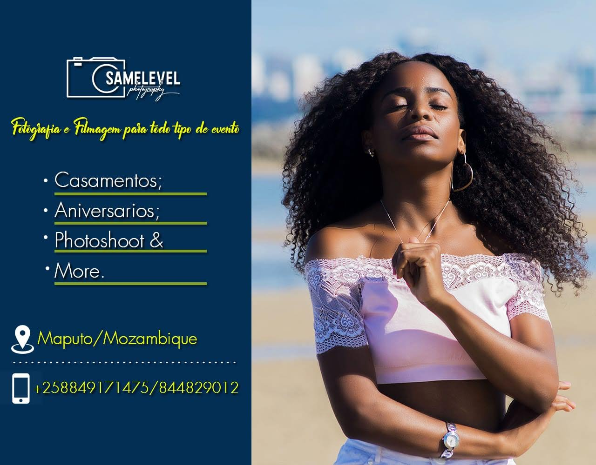

Ol√°üòâ, como voc√™ está? Meu nome √© Hidelgio, mais conhecido por "SameLevel", tenho 2...de idade, sou de uma
cidade chamada NdlavelaüòÖ. Muitos me perguntam porque escolhi a fotografia. A fotografia sempre esteve presente
na minha vida, sempre tive desejo de registrar tudo que acontecia ao meu redor, por acreditar no carinho, no
amor e no simples facto de valorizar o tempo, as lembranças. A fotografia para mim não e apenas um trabalho, e
muito mais que isso, a fotografia permite-me realizar sonhos das outras pessoas, histórias, memorias e momentos
únicos. Já deixei muitas coisas de lado, mas com a fotografia e diferente, eu sempre quero mais. Cursos,
equipamentos que na maioria meu irmão "Manager"üí™ deu muito esfor√ßo e sempre lado a lado me apoiando. Enfim, uma
das formas de entregar com perfei√ß√£oüëå o que fazemos e amar o que fazemos. E quero sempre eternizar momentos
através do meu olhar e da minha lente.
A ideia de que o amor e liberdade não caminham juntos, é muito presente em nossos pensamentos se tornando are
numa crença. Muitos me perguntam porque escolhi a fotografia. A fotografia sempre esteve presente na minha vida,
sempre tive desejo de registrar tudo que acontecia ao meu redor, por acreditar no carinho, no amor e no simples
facto de valorizar o tempo, as lembranças. A fotografia para mim não e apenas um trabalho, e muito mais que
isso, a fotografia permite-me realizar sonhos das outras pessoas, histórias, memorias e momentos únicos. Já
deixei muitas coisas de lado, mas com a fotografia e diferente, eu sempre quero mais. Cursos, equipamentos que
na maioria meu irmão "Manager" deu muito esforço e sempre lado a lado me apoiando. Enfim, uma das formas de
entregar com perfeição o que fazemos e amar o que fazemos. E quero sempre eternizar momentos através do meu
olhar e da minha lente.
Sonhar √© o que sempre nos impulsionaüëå! sonhar nesses dias dif√≠ceis nos trás esperan√ßas de dias melhoresüòé. A
fotografia sempre esteve presente na minha vida, sempre tive desejo de registrar tudo que acontecia ao meu
redor, por acreditar no carinho, no amor e no simples facto de valorizar o tempo, as lembranças. A fotografia
para mim não e apenas um trabalho, e muito mais que isso, a fotografia permite-me realizar sonhos das outras
pessoas, histórias, memorias e momentos únicos. Já deixei muitas coisas de lado, mas com a fotografia e
diferente, eu sempre quero mais. Cursos, equipamentos que na maioria meu irmão "Manager" deu muito esforço e
sempre lado a lado me apoiandoüëä.
A fotografia sempre esteve presente na minha vida, sempre tive desejo de registrar tudo que acontecia ao meu
redor, por acreditar no carinho, no amor e no simples facto de valorizar o tempo, as lembranças. A fotografia
para mim não e apenas um trabalho, e muito mais que isso, a fotografia permite-me realizar sonhos das outras
pessoas, histórias, memorias e momentos únicos. Já deixei muitas coisas de lado, mas com a fotografia e
diferente, eu sempre quero mais.